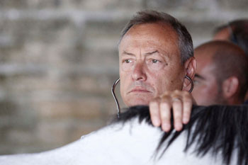

Non mancano i colpi di scena nella lista dei cavalli ammessi alle
prove mattutine di addestramento di
sabato 28 giugno e di quelli che sono stati ammessi direttamente alla
Tratta che si terrà
la mattina successiva. Rimandiamo i commenti ad un successivo articolo, intanto ecco l'elenco:
CAVALLI AMMESSI DIRETTAMENTE ALLE PROVE MATTUTINE DEL 28 GIUGNO
N° - CAVALLO - PROPRIETARIO(cliccando sui nomi dei cavalli sottolineati si aprirà la scheda relativa al cavallo)
1 MAC GYVER - Tamara Rosi
2
MISSISSIPPI - Osvaldo Costa
3 MORESU - Fabio Fioravanti
4
NAIKÈ - Simone Picchi
5 NERONE SAURO - Simone Berni
6 NESPOLO DE BONORVA - Antonio Zedde
7 NOIOSO - Francesco Maria De Mauro
8
NOTTAMBULO - Mattia Marchetti
9 NOVERRE - Augusto Posta
10 OCCOLE’ - Alberto Manenti
11 OCEANO BAIO - Elisabetta Ferrini
12 ONDINA PRIMA - Dino Pes
13 ONEGLIA DE OZIERI - Luca Francesconi
14 ORA DI GALLURA - Angela Rossi
15 ORIOX - Giulia Zingarelli
16 OSAMA BIN - Mark Harris Getty
17 PALIO IMPERO - Mattia Ermini
18 PECCATRICE - Simone Berni
19 PERICLEA - Osvaldo Costa
20 PHATOS DE OZEIRI - Giorgio Campanini
21 PIKACIU’ - Sandro Sganappa
22 PITZULU - Mario Savelli
23 PRESSING DE MORES - Caterina Volpi
24 PRETZIOSA - Stefano Paccagnini
25 QUADRIVIA - Remo Carli
26 QUAN - Simone Berni
27 QUANNA - Silvia Cortonesi
28 QUARTER - Serena Butteri
29 QUARZO BLU - Mark Harris Getty
30 QUARZUS - Francesco Manca
31 QUASAS - Fabio Romanelli
32 QUASIMODA - Camilla Marzi
33 QUASIMODO DI GALLURA - Luigi Bruschelli
34 QUE MASCA - Maurizio Pacchi
35 QUEBECK SAURO - Duccio Ravenni
36 QUEEN WINNER - Carlo Fusi
37 QUERIDA DE MARCHESANA - Giovanni Atzeni
38 QUERINO - Stefano Bramerini
39 QUESTURINO - Salvatore Muroni
40 QUIETNESS - Augusto Posta
41 QUIN TESSE - Mario Savelli
42 QUINOA PRIMA - Stefano Serreli
43 QUINTILIANO - Niccolò Rugani
44 QUINTILLIANO DE AIGHENTA - Emiliano Rinaldi
45 QUIT GOLD - Duccio Fatucchi
46 QULPA DI GALLURA - Gianni Oddo
47 QUORE DE SEDINI - Salvatore Panebianco
48 RAMONA DANZIG - Mark Harris Getty
49 RED RIU - Luca Anselmi
50 RENALZOS - Marcello Roti
51 REXY - Nicola Sandroni
52 ROBA E MACOS - Osvaldo Costa
53 ROCCO RO - Giambattista Satta
54 RODRIGO BAIO - Massimo Maria Alessi
55 ROMANTICO BAIO - Osvaldo Costa
56 RONDELLO - Nicola Perinti
57 RONZIO - Sandro Bencardino
58 ROTEGAGIU - Roberto Meniconi
59 ROVAIO SAURO - Massimo Martelli
60 RUBIEN - Michele Catalani
I CAVALLI AMMESSI DIRETTAMENTE ALLA TRATTA DEL 29 GIUGNO
N° - CAVALLO - PROPRIETARIO(cliccando sui nomi dei cavalli sottolineati si aprirà la scheda relativa al cavallo)
1
INDIANOS - Massimo Milani
2
ISTRICEDDU - Serena Butteri
3
LO SPECIALISTA - Fabio Fioravanti
4
MOCAMBO - Mark Harris Getty
5
NICOLAS DE PEDRA ULPU - Mark Harris Getty
6
OPPIO - Giuliano Brandini
7
OSVALDO - Roberto Danesi
8
PESTIFERO - Massimo Leonini
9
POLONSKI - Mark Harris Getty
10
PORTO ALABE - Fabrizio Brogi

GUIDO CASTELLANO INTERVISTATO DA SIENATV

Al termine della seconda giornata di previsite al Ceppo, Guido Castellano, capo veterinario del Comune di Siena che ha coordinato le visite dei 94 barberi, ha parlato di un clima piuttosto disteso, contrariamente a quanto avvenne ad es. in occasione dei palii dello scorso anno. Secondo Castellano i cavalli esperti sono tutti pronti ed in buone condizioni di salute e ci sono anche dei nuovi soggetti che potrebbero inserirsi nel lotto dei cavalli prescelti. Le prime valutazioni potremo farle entro poche ore. Stasera infatti conosceremo la lista dei cavalli ammessi direttamente alla Tratta del 29 giugno.
Per vedere ed ascoltare l'intervista completa al dottor Castellano,
cliccate qui (intervista a cura di SienaTV).
PRESENTATO IL DRAPPELLONE DEL 2 LUGLIO DIPINTO DA ROSALBA PARRINI -
È DEDICATO AL 70° ANNIVERSARIO DELLA LIBERAZIONE DI SIENA DAL NAZIFASCISMO

Nel Cortile del Palazzo Pubblico è stato presentato il drappellone che andrà in palio alla Contrada vincitrice, la sera del 2 luglio.
La ricerca artistica di Rosalba Parrini è un continuo confronto sulla natura delle cose che attinge a un ricco scrigno di avanguardie. Il drappellone per il Palio della Madonna di Provenzano, dedicato questo 2 luglio al settantesimo della liberazione dei Comuni della nostra provincia dal nazifascismo, ne è una dimostrazione.
Una pagina di Storia da ricordare, quella del 3 luglio 1944, quando Siena fu liberata. Sulla destra del volto della Vergine, assorto, ma sereno, c'è una colomba, simbolo di pace, che ha abbandonato la gabbia dove era stata rinchiusa dalla tragedia della Seconda Guerra Mondiale.
CLICCATE QUA SOTTO

sul drappellone e per vederlo ad alta risoluzione.
IL MASGALANO 2014, REALIZZATO DA LAURA BROCCHI
Il Masgalano 2014, realizzato da Laura Brocchi ed offerto dal coordinamento Donne delle Contrade.

LEGGI LA PRESENTAZIONE DI ANNA CARLI
GIA’ PRONTA LA PIAZZA PER IL PALIO DEL 2 LUGLIO


Oggi alle 12 è stata completata la stesura del tufo per la predisposizione della pista per il Palio dedicato alla Madonna di Provenzano.
Come sempre, e con estrema abilità, gli operai comunali, in azione fin dalle 3 di notte hanno eseguito tutte le operazioni necessarie per rendere agibile l’anello di tufo per le prove mattutine in programma sabato alle ore 6.
Sono circa 40 i dipendenti comunali che, insieme ai tecnici del servizio manutenzione, si trovano impegnati, in tempi strettissimi, all’allestimento completo della Piazza; basti pensare, infatti, che il grande palco delle Comparse (ospita oltre 550 figuranti), viene assemblato in sole tre ore.
Un impegno non indifferente, svolto, spesso, in orari non “canonici”, a dimostrazione, anche, del grande sentimento di appartenenza alla Festa senese e alla città. Per questo, il sindaco Bruno Valentini, questa mattina ha ripreso la consuetudine d'intrattenersi con tutti gli operai a conclusione dei lavori. Un’occasione di contatto informale, che è stata anche momento di confronto e interscambio relazionale.
TERMINATE LE PREVISITE AL CEPPO - NESSUNA DEFEZIONE IMPORTANTE

E’ terminata questa sera poco dopo le 20 la due giorni di previsite alla clinica veterinaria di Ciampoli al Ceppo. Tra i 94 soggetti ammessi alle visite, alcune assenze (nessuna di rilievo) e molti cavalli in forma e ben preparati.
Nella prima giornata, occhi puntati sull’esordiente Quit Gold, il 5 anni di Duccio Fatucchi allenato da Antonio Siri, da tutti accreditato come una possibile new-entry nel lotto dei 10. Nella prima mattinata di oggi, invece, hanno fatto il loro ingresso a Monteresi i “bomboloni” della scuderia Milani, Istriceddu, Morosita Prima, Indianos, Porto Alabe, Pestifero e il chiacchieratissimo Noioso, che hanno preceduto di pochi minuti il gioiellino di Massimo Coghe, Magic Tiglio.
Tantissimi i commenti positivi tra gli addetti ai lavori, con la voce sempre più pressante di un ritorno al lotto alto dopo alcuni anni di “vacche magre”. Certamente le idee di tutti saranno ancora più chiare nelle prossime ore, quando sarà ufficiale la lista degli ammessi alle prove di notte e di quelli che andranno direttamente alla tratta. Tutti i soggetti visitati sono stati sottoposti a radiografie, mentre da segnalare qualche disagio e numerose file nella mattinata di lunedì proprio per un guasto all’apparecchio delle lastre.
Dubitiamo che si tornerà ad un lotto "alto", per ragioni di sicurezza della pista, ma sognare è bello.
VIOLA CARIGNANI RACCONTA LA PRIMA GIORNATA DI PREVISITE AL CEPPO

INTERVISTA A VIOLA CARIGNANI CHE CI RACCONTA LA PRIMA GIORNATA DI PREVISITE
(a cura di Antenna Radio Esse)
LE PRIME INDISCREZIONI SUL DRAPPELLONE DEL PALIO DEL 2 LUGLIO 2014
Voci ufficiali sul drappellone, che ha trovato espressione nella forza dei colori e delle forme di Rosalba Parrini, ci dicono che il dipinto su seta evocherà e imprimerà nella memoria collettiva il ricordo della Liberazione della città e della provincia di Siena dall’occupazione nazifascista.
Il drappellone sarà svelato ai senesi mercoledì 25 giugno alle ore 19 nel Cortile del Podestà di Palazzo Pubblico alla presenza del sindaco Bruno Valentini e di tutte le massime autorità paliesche e cittadine.
COM'ERA PIAZZA DEL CAMPO ALLA META' DEL XIX SECOLO

Abbiamo trovato una foto sensazionale della Cappella di Piazza. Come si può vedere nella foto, davanti alla Cappella ci sono 4 colonnini in travertino. Si tratta di un documento eccezionale, perché era assolutamente ignoto il fatto che davanti alla Cappella ci fossero quattro colonnini. Immaginiamo come sarà stato correre il Palio, dovendo schivarli!!!
Battute a parte, questa foto è stata scattata tra il 1808 ed il 1868. La ragione di questa certezza (non esageriamo nel definire questa foto uno "scoop" al livello cittadino), sta nel fatto che i colonnini furono installati nel 1808, tra l'altro erano congiunti da catene e non venivano montati gli steccati, per cui ci sono cronache di palii in cui si dice che i cavalli che sbagliavano le curve entravano dentro la Piazza. Al 1868, invece, risale l'ultima sistemazione dei colonnini di Piazza, con la sostituzione di tutti i colonnini, eccettuati quelli di tutta la fila davanti a Palazzo Pubblico, che quindi sono gli originali del 1808.
Lo staff del sito è alla ricerca di foto di Siena che abbiano almeno 100 anni. Evidentemente non siamo interessati a foto di Instagram o a foto recenti :-).
Grazie a tutti per la collaborazione!
PIAZZA DEL CAMPO COME NON L'AVETE MAI VISTA
LA PRESENTAZIONE DEL DRAPPELLONE MERCOLEDI' 25 GIUGNO ALLE ORE 19
Il drappellone sarà svelato ai senesi mercoledì 25 giugno alle ore 19 nel Cortile del Podestà di Palazzo Pubblico. Alla presentazione il sindaco Bruno Valentini illustrerà il drappellone dipinto da Rosalba Parrini per il Palio del 2 luglio.
A illustrare l’opera ci sarà Virginia Masoni di Canale 3 Toscana. Nel corso della cerimonia sarà inoltre presentato, a cura di Anna Carli, il Masgalano realizzato da Laura Brocchi e offerto dal Coordinamento Gruppi Donne delle Contrade.
PALIO 2 LUGLIO 2014: I CAVALLI ISCRITTI ALLA PREVISITA SONO 94

Sono 94 i cavalli iscritti al Palio del 2 luglio che parteciperanno alle previsite alla clinica “Il Ceppo” lunedì 23 e martedì 24 giugno, in orari che saranno comunicati successivamente.
Questo l'elenco dei cavalli (nell'ordine numero, nome del cavallo e nome del proprietario - i nomi dei cavalli sottolineati sono linkati alle relative schede):
1 BOWILDE DA CLODIA Silvia Stabile
2 INDIANOS Massimo Milani
3 ISTRICEDDU Serena Butteri
4 ITALIANA DE SEDINI Federica Luchetti
5 LO SPECIALISTA Fabio Fioravanti
6 MAC GYVER Tamara Rosi
7 MAGIC TIGLIO Massimo Coghe
8 MASEDU Giuseppe Zedde
9 MIRKO MONELLO Alessandro Chiti
10 MISSISSIPPI Osvaldo Costa
11 MOCAMBO Mark Harris Getty
12 MONTIEGO Mark Harris Getty
13 MORESU Fabio Fioravanti
14 MOROSITA PRIMA Carolina Tacconi
15 NAIKÈ Simone Picchi
16 NERONE SAURO Simone Berni
17 NESPOLO DE BONORVA Antonio Zedde
18 NICOLAS DE PEDRA ULPU Mark Harris Getty
19 NIMENTO Gian Piero Nerli
20 NOIOSO Francesco Maria De Mauro
21 NOTTAMBULO Mattia Marchetti
22 NOVERRE Augusto Posta
23 O’ SOLE MIO BELLO Egisto Giuseppe Galeazzi
24 OCCOLE’ Alberto Manenti
25 OCEANO BAIO Elisabetta Ferrini
26 ONDINA PRIMA Dino Pes
27 ONEGLIA DE OZIERI Luca Francesconi
28 OPPIO Giuliano Brandini
29 ORA DI GALLURA Angela Rossi
30 ORGOLESE Simone Berni
31 ORIOX Giulia Zingarelli
32 ORPEN Graziano Chiappetta
33 OSAMA BIN Mark Harris Getty
34 OSVALDO Roberto Danesi
35 PALIO IMPERO Mattia Ermini
36 PECCATRICE Simone Berni
37 PERICLEA Osvaldo Costa
38 PESTIFERO Massimo Leonini
39 PHATOS DE OZEIRI Giorgio Campanini
40 PICCOLO SOGNO Tommaso Furielli
41 PIKACIU’ Sandro Sganappa
42 PITZULU Mario Savelli
43 POLE POSITION Giuseppe Zedde
44 POLONSKI Mark Harris Getty
45 PORTO ALABE Fabrizio Brogi
46 PRESSING DE MORES Caterina Volpi
47 PRETZIOSA Stefano Paccagnini
48 PREZIOSA PENELOPE Antonio Pozzi
49 PROFESSORE Alessandro Bandini
50 QUADRIVIA Remo Carli
51 QUAN Simone Berni
52 QUANNA Silvia Cortonesi
53 QUANTOVALI Mark Harris Getty
54 QUARTER Serena Butteri
55 QUARZO BLU Mark Harris Getty
56 QUARZUS Francesco Manca
57 QUASAS Fabio Romanelli
58 QUASIMODA Camilla Marzi
59 QUASIMODO DI GALLURA Luigi Bruschelli
60 QUATIVOGLIO Antonio Zedde
61 QUE MASCA Maurizio Pacchi
62 QUEBECK SAURO Duccio Ravenni
63 QUEEN WINNER Carlo Fusi
64 QUERIDA DE MARCHESANA Giovanni Atzeni
65 QUERINO Stefano Bramerini
66 QUESTURINO Salvatore Muroni
67 QUI’ LOGAN Mattia Marchetti
68 QUIETNESS Augusto Posta
69 QUIN TESSE Mario Savelli
70 QUINOA PRIMA Stefano Serreli
71 QUINTILIANO Niccolò Rugani
72 QUINTILLIANO DE AIGHENTA Emiliano Rinaldi
73 QUINTO ARIO Sandro Bencardino
74 QUIT GOLD Duccio Fatucchi
75 QULPA DI GALLURA Gianni Oddo
76 QUORE DE SEDINI Salvatore Panebianco
77 RAGNATELA Massimo Coghe
78 RAMONA DANZIG Mark Harris Getty
79 RED RIU Luca Anselmi
80 RENALZOS Marcello Roti
81 REVAC Filippo Toti
82 REVERENDA MADRE Mureddu Monica
83 REXY Nicola Sandroni
84 RIBOT SECONDO Giuseppe Cossu
85 ROBA E MACOS Osvaldo Costa
86 ROCCO RO Giambattista Satta
87 RODRIGO BAIO Massimo Maria Alessi
88 ROMANTICO BAIO Osvaldo Costa
89 RONDELLO Nicola Perinti
90 RONZIO Sandro Bencardino
91 ROSA BELLA Michela Gori
92 ROTEGAGIU Roberto Meniconi
93 ROVAIO SAURO Massimo Martelli
94 RUBIEN Michele Catalani
CHI CORRERA' IL PROSSIMO PALIO DEL 2 LUGLIO 2014
Queste le 10 contrade che correranno la Carriera del 2 luglio 2014.
GIRAFFA, CHIOCCIOLA, DRAGO, TARTUCA, SELVA, BRUCO, AQUILA, LUPA*, PANTERA* e ONDA*.


* ESTRATTE IL 25 MAGGIO 2014. Per vedere il video dell'estrazione, cliccate qui.
NON SONO STATE ESTRATTE (NELL'ORDINE) E CORRERANNO DI DIRITTO IL PALIO DEL 2 LUGLIO 2015: TORRE, NICCHIO, CIVETTA, VALDIMONTONE, LEOCORNO ED OCA. L'ISTRICE, che avrebbe dovuto correre di diritto il Palio del 2 luglio 2015, sconterà invece il suo secondo Palio di squalifica (per saperne di più leggete qui).
Cliccate qui per vedere chi correrà ad agosto 2014.
A SIENA TV, "QUATTRO PASSI VERSO IL PALIO", A CURA DI SENIO SENSI
Da domani, venerdì 6 giugno, alle ore 21 e per quattro venerdì, andrà in onda su SienaTV una trasmissione di avvicinamento al Palio, curata dal dott. Senio Sensi, già presidente del Consorzio per la Tutela del Palio di Siena.
BARTOLO AMBROSIONE CONFERMATO MOSSIERE
Bartolo Ambrosione è stato riconfermato mossiere per il Palio della Madonna di Provenzano. Sarà la sua 10ª presenza sul verrocchio.

I MOSSIERI
NOMINATA LA COMMISSIONE MASGALANO PER I PALII 2014
Il 29 maggio la Giunta comunale ha deliberato la composizione della Commissione Masgalano per il 2014. A farne parte saranno: Gabriele Fattorini (Nobile Contrada dell’Aquila), supplente Gabriele Boschi; Stefano Pieri (Nobile Contrada del Bruno), supplente Francesco Carletti; Simone Petricci (Contrada della Chiocciola), supplente Paolo Petreni; Andrea Bonacci (Contrada Priora della Civetta), supplente Antonio Dami; Federico Melai (Contrada del Drago), supplente Giovanni Sportoletti; Marco Corsini (Imperiale Contrada della Giraffa), supplente Federico Neri; Armando Angiolini (Contrada Sovrana dell’Istrice), supplente Emiliano Muzzi; Paolo Bartolini (Contrada del Leocorno), supplente Ernesto Campanini; Giuido Bruni ( Contrada della Lupa), supplente Alessandro Gronchi; Giacomo Oretti (Nobile Contrada del Nicchio), supplente Andrea Finetti; Michele Landi (Nobile Contrada dell’Oca), supplente Nicola Coppi; Andrea Cancelli (Contrada Capitana dell’Onda), supplente Guido Bellini; Andrea Gonnelli (Contrada ella Pantera), supplente Marco Ceccherini; Gabriele Bartali (Contrada della Selva), supplente Luca Zanelli; Cesare Guideri (Contrada della Tartuca), supplente Lorenzo Lorenzini; Mauro Bonelli (Contrada della Torre), supplente Marco Capannoli; Aldo Giannetti (Contrada di Valdimontone), supplente Luca Braccini.